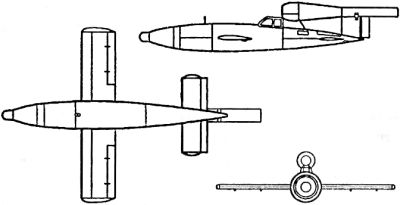

Пилотируемые ракеты Третьего рейха
Разумеется, история Пенемюнде не ограничивается теми проектами, которые были доведены «до железа» — до моделей и серийных образцов. Конструкторская мысль всегда обгоняет текущие планы, и фантастичность замыслов инженеров Третьего рейха способна производить впечатление и по сию пору.
Так, разработчики «Fi-103» («Фау-1») вовсе не собирались останавливаться на достигнутом. Понимая, что этот ракетный снаряд в его первоначальном виде может быть использован только по «площадным» целям, они задались целью создать его пилотируемую модификацию, запускаемую с самолета-носителя, одновременно решив три задачи: увеличить точность наведения, избавиться от привязки к пусковой наземной установке и обеспечить маневренность, которая позволила бы преодолеть воздушные заградительные барьеры англичан.
Работы над управляемым вариантом «Fi-103» начались еще в октябре 1943 года, а уже к зиме был объявлен набор добровольцев для участия в этой программе.
В качестве самолетов-носителей командование Люфтваффе выделило два бомбардировочных полка KG-3 и KG-53, вооруженных бомбардировщиками «Не-111» («Heinkel») различных модификаций, в том числе и специальной версией этого самолета, обозначенной «Не-111Н-22» и изначально разработанной как носитель крылатой ракеты.
К марту 1944 года восемьдесят высококвалифицированных летчиков составили группу пилотов, проходивших теоретическую и практическую подготовку — первоначально для полетов на одноразовом реактивном самолете «Ме-328» («Messerschmitt»). Однако возможностей развернуть серийное производство нового самолета не существовало, и было принято решение использовать для реализации этого проекта серийно изготавливаемый «Fi-103».
Работу по созданию пилотируемого варианта возглавил Вилли Фидлер, технический директор заводов в Пенемюнде. Комплекс мероприятий получил наименование «Рейхенберг» («Reichenberg»), поэтому впоследствии все самолеты-снаряды этого типа носили такое же название.
Замысел был довольно прост. На ракету требовалось установить только пилотскую кабину, и получалось оружие совершенно нового типа. Поэтому на протяжении всего четырнадцати дней с начала работ инженеры Пенемюнде выпустили первые прототипы для тренировочных и практических целей.
Впоследствии было построено четыре различных пилотируемых версии «Fi-103». «Рейхенберг I» являлся бездвигательным пилотируемым самолетом-снарядом, предназначенным для натурных аэродинамических испытаний, «Рейхенберг II» — двухместным учебным для выработки навыков пилотажа, «Рейхенберг III» — одноместным учебным, оборудованным двигателем и посадочной лыжей, «Рейхенберг IV» — боевым, оснащенным боезарядом, но без шасси.
В сентябре 1943 года были испытаны в воздухе первые экземпляры бездвигательных модификаций «Рейхенберг I» и «Рейхенберг II». Выглядело это так. Бомбардировщик «Не-111» поднимал самолет-снаряд на высоту в 300400 метров; затем пилот отсоединял свой «Рейхенберг» от носителя и после планирующего полета приземлялся на аэродроме. Обучение курсантов было предельно упрощено, так как они готовились не для участия в воздушных боях, а для полета в один конец.
Во время испытательной программы «Рейхенберга III» произошел ряд катастроф. Поэтому для проведения испытаний была вызвана знаменитая летчица Ханна Рейч, уже поднимавшая в небо экспериментальные машины с реактивными двигателями. На «Рейхенберге III» ей удалось выполнить десять успешных полетов. Но и после этого аварии продолжались. Расследование показало, что их причиной был отказ системы управления ввиду сильной вибрации, создаваемой пульсирующим двигателем.
На основе «Рейхенберга IV» были созданы две боевые модификации: для поражения наземных и морских целей.

Морской вариант, рассчитанный на удары по крупным судам противника, отличался от сухопутного тем, что, отсоединившись от самолета-носителя, снаряд пикировал вниз под строго установленным углом со скоростью около 800 километров в час и ударялся о воду в непосредственной близости от цели. Для выдерживания заданных параметров полета был разработан специальный прицел. После удара фюзеляж распадался, освобождая специальную торпеду, которая должна была взорваться под незащищенным днищем корабля. Пилот при этом погибал.
В отличие от императорской Японии, в Германии идея пилотов-смертников не нашла восторженных приверженцев. Дисциплина среди добровольцев, которым предстояло управлять «Рейхенбергами», была низкой, и командование сомневалось, что они вообще станут выполнять поставленную задачу, если это непременно закончится их гибелью. В связи с этим генерал-фельдмаршал Эрхард Мильх, занимавший должность главного авиационного инспектора, категорически настоял на оснащении «Рейхенберга IV» катапультируемым креслом, предназначенным для эвакуации пилота после наведения снаряда на цель.
За все это время было изготовлено около 100 экземпляров самолета-снаряда «Рейхенберг», а в течение 1944 года 75 экземпляров было передано в распоряжение пятой группы бомбардировочного полка V./KG-200. Однако какая-либо информация о боевом применении пилотируемого варианта «Фау-1» отсутствует.
В 1945 году американцы захватили несколько «Рейхенбергов» в различном техническом состоянии. Они были испытаны на полигоне Аламогордо в Нью-Мексико и Эгленфилд во Флориде